01实时
听见问题，及时准备回答
区分提问、请求与追问。对方补充后半句时，回答会跟着完整问题更新。
识别到的问题会整理成清晰的回答提示，方便你先看重点，再用自己的方式表达。
v1.8.0 · 原生 macOS · 默认本机离线语音识别
InterviewHacker
面试、学术报告、商务会议和课程中，分别听清对方与自己的声音，及时整理问题与建议回答。按场景带入资料，会后继续复盘。
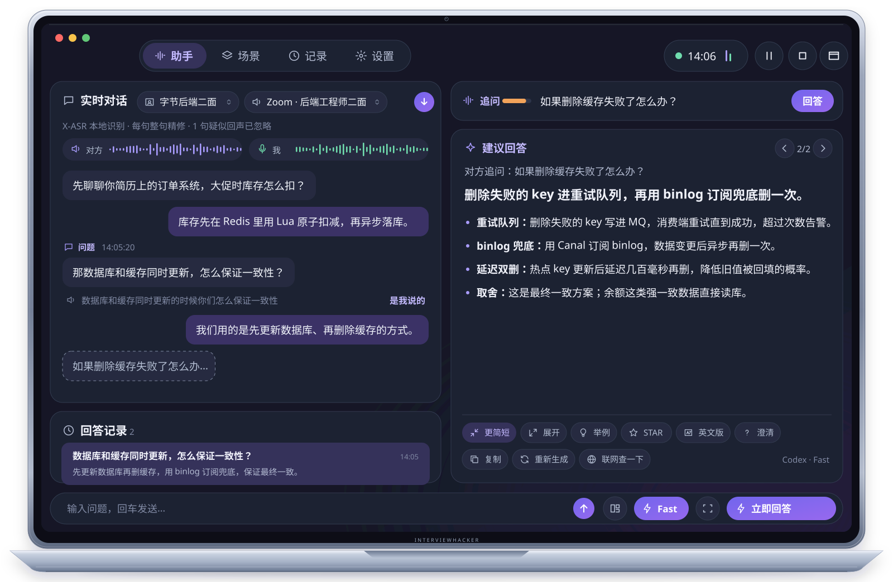
01实时演示
双路收音、问题识别与流式回答在同一个窗口里连续发生。区分提问、请求与追问；对方补充后半句时，回答会跟着完整问题更新。
那数据库和缓存同时更新，怎么保证一致性？
我们用的是先更新数据库、再删除缓存。删除失败的 key 进重试队列，同时用 Canal 订阅 binlog 再删一次兜底；热点 key 做延迟双删。这是最终一致方案，余额这类强一致数据直接读库。
对方的系统声音与你的麦克风分开识别，并尝试排除扬声器回声，抢话也不混在一起。
区分陈述、提问、请求与追问。识别到的问题会整理成清晰的回答提示，方便你先看重点。
写成可以直接说出口的口语，逐字输出；可一键更简短、展开、举例、改为 STAR 或切换语言。
02工作链路
03核心能力
双路收音分别处理对方的系统声音和你的麦克风，让你更容易跟上问题与自己的表达。回答建议用于辅助准备，请结合实际情况判断和作答。
01实时
区分提问、请求与追问。对方补充后半句时，回答会跟着完整问题更新。
识别到的问题会整理成清晰的回答提示，方便你先看重点，再用自己的方式表达。
02场景
每场面试、报告或会议都有独立背景，切换场景即可带入对应的目标、资料与回答要求。
回答只参考当前场景里相关的资料、经验和题库，减少临场翻找信息的时间。
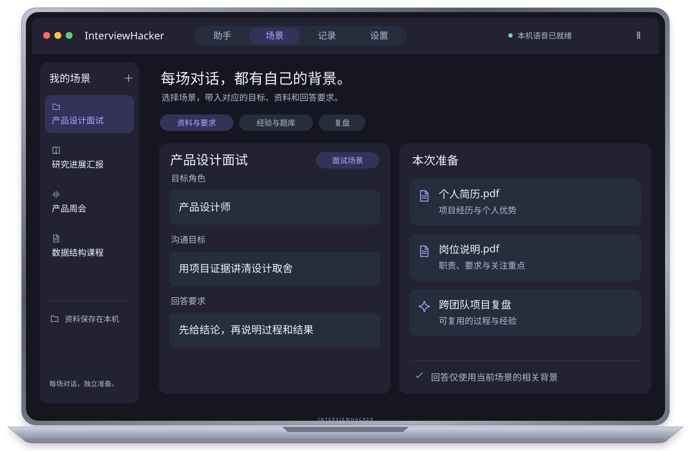
03查看
完整内容留在助手窗口，重点放进悬浮提词器。同一 Wi-Fi 下，也可以用手机伴侣查看当前问题与回答。
提词器可放在摄像头下方，支持鼠标穿透、调整不透明度和一键隐藏全部窗口。
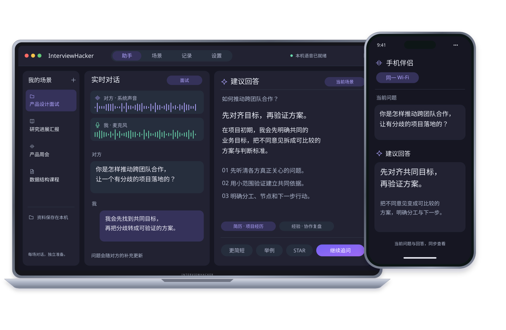
04资料
简历、岗位说明、论文或会议材料，都可以加入当前场景。资料在本机解析，回答时按问题取用相关内容。
也可以导入自己的 SKILL.md，让回答按全局习惯或指定场景使用答题框架。
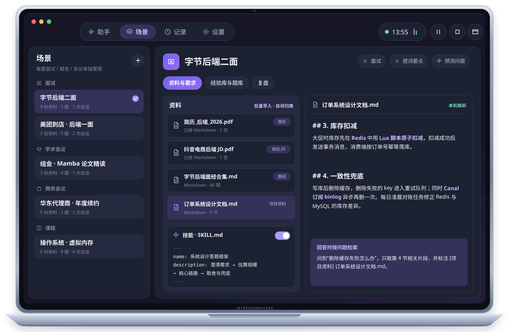
05复盘
结束后可回看转录、问题、回答和摘要；复盘得到的经验与题目可以留给下一次使用。
会话记录与场景资料保存在本机；你可以在设置中关闭记录、导出备份或删除数据。
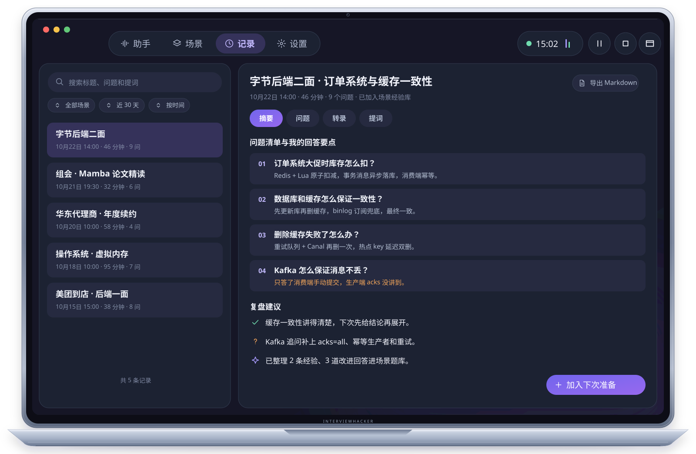
04四步流程
为面试、学术报告、商务会议、课程或通用交流建立独立场景。当前场景的目标、资料、经验和题库会按需参与回答。
为面试、报告、会议或课程建立专属上下文。
导入相关文件，设置目标、回答要求与可选技能。
选择音频来源，实时查看转录、问题判断和流式回答。
回看问题、回答与摘要，把经验留给下一次。
05产品优势
让准备、表达与复盘连在一起。每个细节都围绕“现在该说什么”。
双路实时识别
系统声音与麦克风分开识别，并尝试排除扬声器回声。你在说话时，等你说完再出回答。
回答贴合场景
问题、相关资料、经验和题库结合当前场景提供上下文。
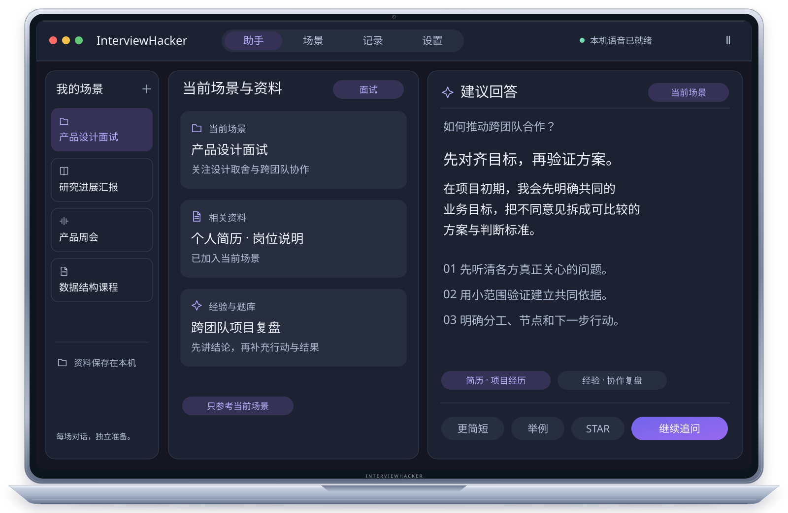
一键调整
联网搜索
查看方式灵活
悬浮提词器可放在摄像头下方；手机伴侣在同一 Wi-Fi 下查看并遥控。
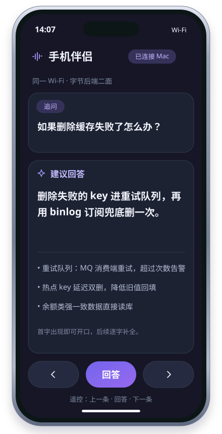
悬浮提词器
半透明浮窗，鼠标穿透时控制按钮仍可点击；可隐藏玻璃背景，只留文字。
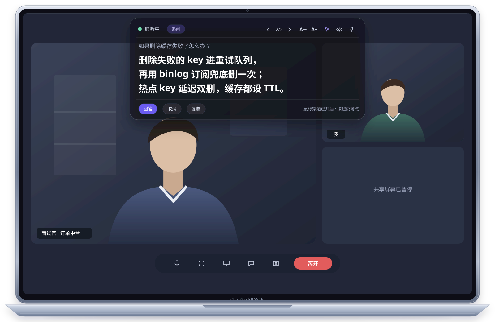
资料检索
PDF、Word、PPT、Excel、图片等在本机转换，按问题检索相关片段并标注文件与页码。
技能
导入自己的 SKILL.md，全局或按场景启用。
截图提问
06复盘与自我迭代
每次会话自动记录转录、问题、提词与当时的资料。会后按模式复盘，经验与改进后的回答并入当前场景的经验库和题库，下次回答自动参考。
07使用场景
每个场景是一套独立的上下文：各用各的简历版本、讲稿、议程或笔记。开始前切换场景，回答只使用当前场景的内容。
带入简历、岗位 JD 和面经。面试官从订单系统追问到缓存一致性，回答直接引用你项目里的方案与数字。
简历岗位 JD面经项目资料
讲稿跟随当前幻灯片，讲过的要点自动打勾，并提示过渡句。导师追问“参数随输入变化为什么还能并行训练”时，给出引用论文页码的解释。
论文幻灯片讲稿可能被问
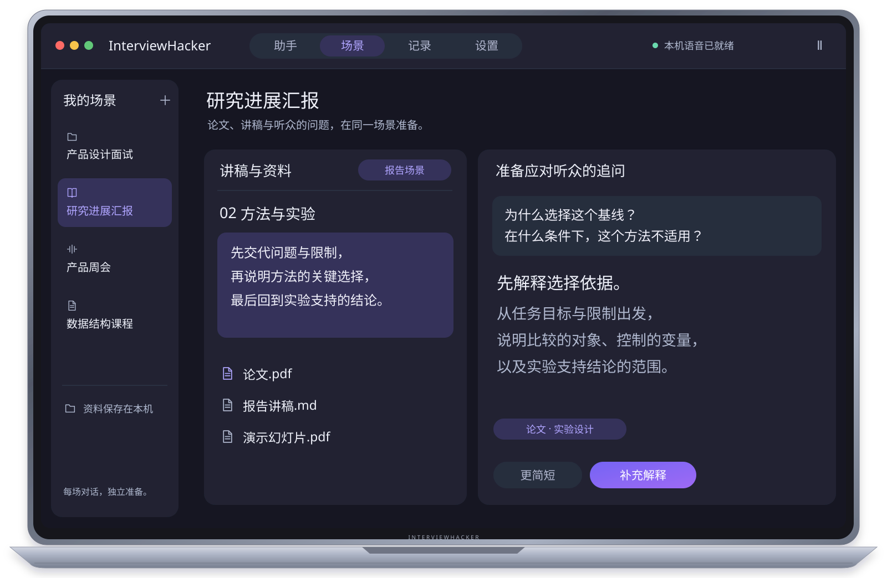
对方要求单价再降 8 个点时，按场景里设定的底线给出阶梯报价思路；同时实时记下决定事项、待办与分歧。
议程报价表我方底线会议纪要
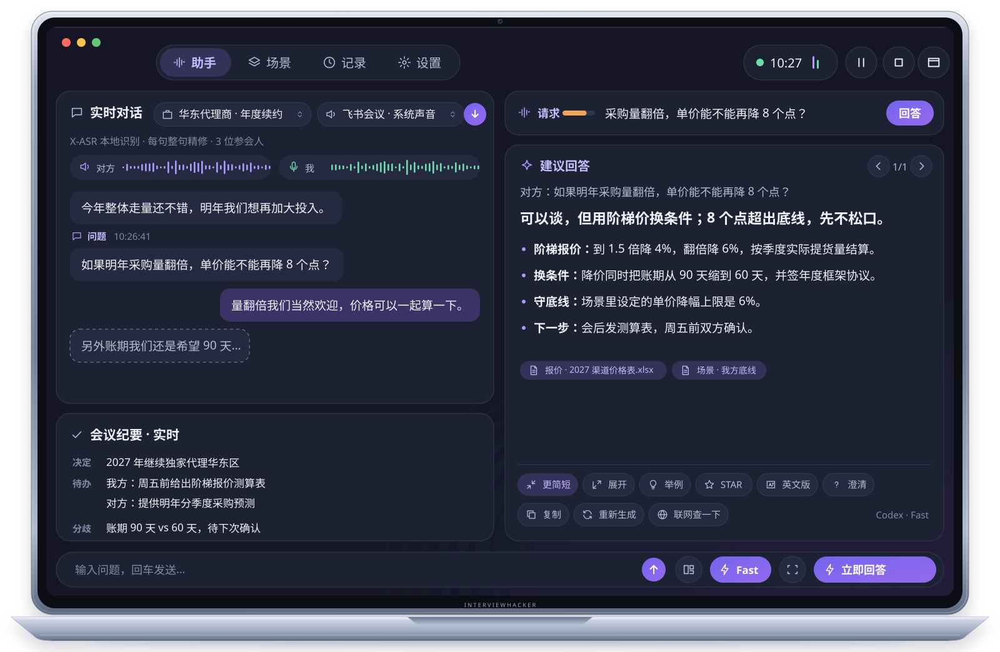
网课上老师点名提问“TLB 未命中时发生什么”，答案对齐到课件第 9 讲第 23 页；课后回看重点和还没弄懂的地方。
课件笔记作业教材
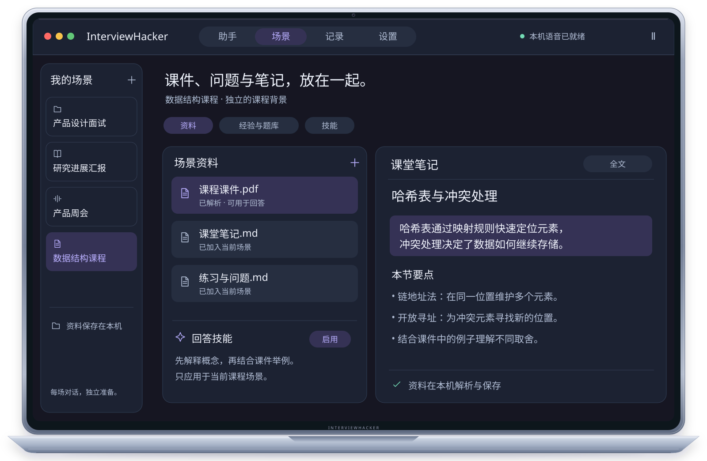
08数据去向
默认使用本机离线语音识别，原始音频不会保存。若选择云端识别并同意，音频会发送给所选服务。生成回答时，转录、问题、相关资料片段、截图与启用的技能会发送到你配置的回答引擎；场景资料和会话记录保存在本机。
联网搜索开启后，问题文本会发送至所选搜索服务。手机伴侣默认关闭；启用后仅同步当前问题与回答，通过本地网络以明文 HTTP 传输，请只在可信 Wi-Fi 下使用。
查看完整数据去向保存在你的 Mac
场景资料会话记录经验库与题库本机离线语音识别
回答引擎 你配置的服务
生成回答时：转录、问题、相关资料片段、截图与启用的技能
云端识别 可选 · 需同意
音频
联网搜索 开启后
问题文本
手机伴侣 默认关闭 · 可信 Wi-Fi
当前问题与回答，本地网络明文 HTTP
当前应用版本 v1.8.0；下载需要仓库访问权。
开始使用需要语音识别 + 对话服务。回答会使用当前问题检索到的资料片段，不会把所有资料塞入上下文。
09常见问题
InterviewHacker 是面向 macOS 的私人 SI（Super Intelligence，超级智能）对话助手，可用于面试、学术报告、商务会议、课程和通用交流。
默认使用本机离线语音识别；也可按需选择 Apple Speech 或云端识别。云端识别需要按提示同意后才会发送音频。
生成回答时，转录、问题、检索到的资料片段、主动添加的截图和启用的技能会发送到你配置的回答引擎。联网搜索开启后，问题文本会发送到所选搜索服务。
支持悬浮提词器和手机伴侣。手机与 Mac 连接同一 Wi-Fi 后，可查看实时回答并进行遥控。